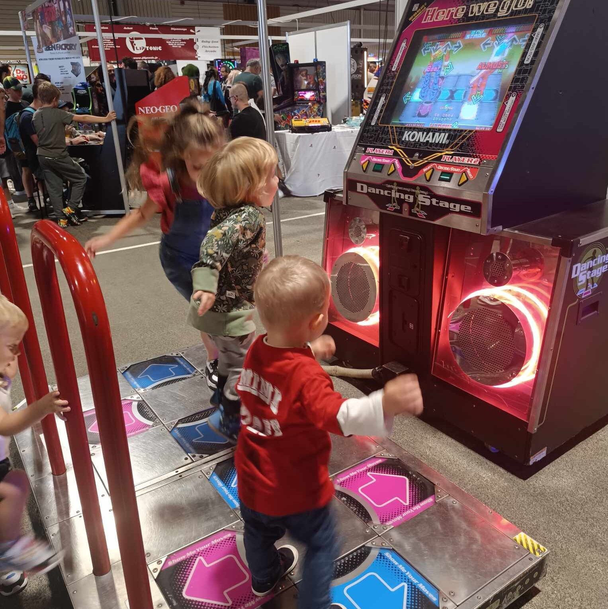
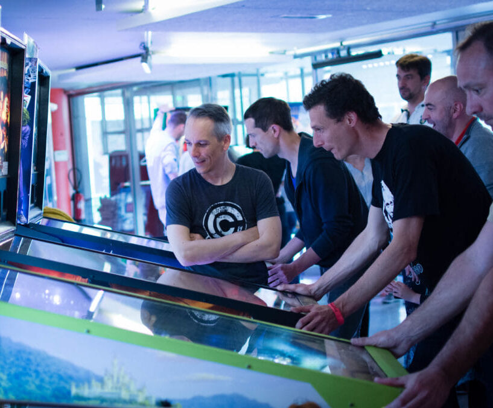
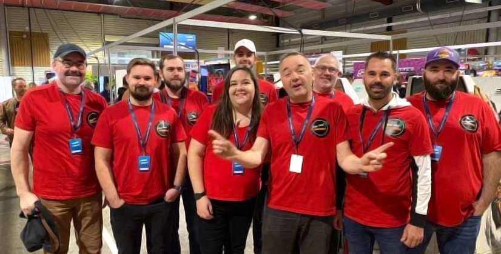

Les préparatifs du Salon Games in Cholet 2025 : Une équipe passionnée en pleine action pour un événement mémorable.
Salon Games in Cholet 2025 se prépare à accueillir les passionnés de jeux vidéo vintage et d'arcades et de flippers, dans un événement qui s'annonce encore exceptionnel cette année. Alors que le grand jour approche à grands pas, chaque membre de l'association se met en quatre pour offrir une expérience inoubliable aux visiteurs. Derrière chaque détail, un travail acharné se cache, fait de coordination, de passion et d'effort collectif.
La logistique : La base du succès
C’est grâce à un travail minutieux en amont que l’événement pourra se tenir dans les meilleures conditions. Les responsables logistiques de l’association, s’assurent que chaque recoin du lieu soit prêt à recevoir les nombreux stands, bornes d’arcade, flippers et exposants. De la gestion de l’espace d’exposition à l’agencement des lieux, il coordonnent chaque mouvement et anticipe tous les besoins techniques. Des câbles aux prises électriques, tout doit être à sa place pour que les visiteurs profitent pleinement des jeux sans accroc.

Le montage des bornes : Des passionnés au service du jeu
Le cœur du salon, ce sont bien sûr les bornes d’arcade. Celles-ci sont non seulement des pièces de collection, mais aussi des symboles de l’histoire du jeu vidéo. Stéphane et christophe, deux membres clé de l’association, sont responsables de la préparation et du montage des bornes. Ils ont une expertise incontestable en réparation et restauration de machines anciennes. Entre nettoyage, remise en état des écrans CRT et réglages techniques, chaque borne doit être parfaitement fonctionnelle et offrir une expérience authentique. Leur objectif est de garantir une immersion totale pour les visiteurs, en leur permettant de revivre les jeux d’antan dans les meilleures conditions.
L’animation et l’accueil : Un événement vivant
L’animation du salon est un autre aspect essentiel. L’équipe toute entière et les exposants, travaillent pour créer une atmosphère chaleureuse et conviviale. L’accueil des visiteurs, la distribution de brochures et la gestion des flux sont essentiels pour éviter toute confusion et permettre une expérience fluide. Les bénévoles chargés de l’animation, quant à eux, préparent des tournois et des démonstrations en direct. Ils sont aussi présents pour guider les visiteurs, leur expliquer les jeux, et partager leurs anecdotes et conseils. Ils sont aussi là pour prévenir les techniciens en cas de panne sur un appareil pour ne pas gêner au bon fonctionnement du salon pendant les 48 heures.

La communication : Faire rayonner l'événement
Tout l'enjeu de la communication réside dans la capacité à attirer un large public et à tenir tout le monde informé sur les dernières actualités de l’événement. Les responsables de la communication, s’occupent de la gestion des réseaux sociaux, de la création des visuels promotionnels et de l’envoi des newsletters. Ils coordonnent avec les partenaires et les médias locaux pour que le salon bénéficie d’une visibilité optimale. Grâce à eux, l’événement attire non seulement les passionnés de rétrogaming et de flippers, mais aussi de nombreux curieux, impatients de découvrir ce monde fascinant.

Un événement dans un esprit d’équipe
Ce qui ressort le plus de ces préparatifs, c’est la solidarité et l’esprit d’équipe qui règnent au sein de l’association. Chaque membre a un rôle bien défini, mais tous partagent la même passion : faire de ce salon un événement incontournable pour les amoureux du rétrogaming et des flippers. Leurs efforts sont complémentaires, et chacun apporte sa touche personnelle pour faire de cette journée un moment unique.
Le jour J approche à grands pas, mais grâce au travail acharné de cette équipe passionnée, tout semble prêt pour offrir aux visiteurs une expérience inoubliable. L’arcade et le rétrogaming n’ont jamais été aussi vivants, et c’est grâce à l’investissement de chacun que cet événement se déroulera sans failles et préfigurera d’autres salon encore plus exclusifs.
Restez connectés au site et à nos réseaux sociaux, dans les prochains mois nous vous annoncerons une grande nouvelle concernant les prochains salons, j’aime autant vous dire que vous allez être surpris et agréablement.

Le STAFF WCA